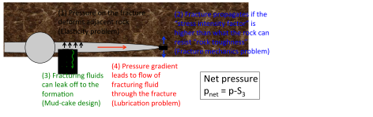
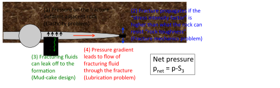

Next: 7.4 Multistage hydraulic fracturing Up: 7. Hydraulic fracturing Previous: 7.2 Hydraulic fractures in Contents
The creation of a hydraulic fracture improves dramatically the surface area of the wellbore in contact with the formation, and also the corresponding production rates (at the same bottomhole pressure).
The ratio between the area of a fracture (constant height  and half-length
and half-length  ) and the area of an openhole wellbore (radius and height ) is
.
Fractures are usually much longer than the radius of the wellbore and so does the fracture area in contact with the reservoir rock compared to the area of the wellbore.
The use of a skin factor
) and the area of an openhole wellbore (radius and height ) is
.
Fractures are usually much longer than the radius of the wellbore and so does the fracture area in contact with the reservoir rock compared to the area of the wellbore.
The use of a skin factor  permits calculating the flow rates in the presence of the fracture using the wellbore equation (Figure 7.11).
permits calculating the flow rates in the presence of the fracture using the wellbore equation (Figure 7.11).
![\includegraphics[scale=0.65]{.././Figures/split/9B-2.pdf}](img1061.svg) |
Several physical processes interact during the propagation of fluid-driven fractures (Figure 7.13). The main processes include:
The first step consists on solving the deformation of a fracture subjected to external far-field stresses
 and pressure in the fracture
and pressure in the fracture  .
The example in Figure 7.14 shows a 2D example of a fracture within a infinitely large and impervious medium.
The fracture has a fluid pressure that varies along the length of the fracture.
The center is pressurized at pressure and the ends have zero pressure.
The medium has a far-field minimum principal stress
.
The example in Figure 7.14 shows a 2D example of a fracture within a infinitely large and impervious medium.
The fracture has a fluid pressure that varies along the length of the fracture.
The center is pressurized at pressure and the ends have zero pressure.
The medium has a far-field minimum principal stress  acting perpendicular to the fracture.
The net pressure
acting perpendicular to the fracture.
The net pressure  is defined as the difference between the fluid pressure in the fracture and least principal total stress .
is defined as the difference between the fluid pressure in the fracture and least principal total stress .
 |
(7.2) |
For example, the fracture in Figure 7.14 has positive net pressure in the center and negative net pressure in the ends. A fluid-driven fracture will open if and only if , i.e., . Also, the net pressure concept facilitates the development of analytical solutions, by combining two actions into one.
The second step is to solve the displacements and strains that occur due to pressuring a fracture with a given net pressure. This problem was solved by A. A. Griffith (https://en.wikipedia.org/wiki/Fracture_mechanics), and is known as the Griffith crack problem. Griffith assumed a homogeneous and isotropic solid to solve stresses around a fracture.
The simplest solution is the one in which the net pressure is constant along the fracture
 .
Hence, for a fracture with half-length
.
Hence, for a fracture with half-length  (Fig. 7.15), the boundary conditions of the problem are:
(Fig. 7.15), the boundary conditions of the problem are:
 |
(7.3) |
![\includegraphics[scale=0.55]{.././Figures/split/9B-5.pdf}](img1072.svg) |
The solution of the Navier's equation (Eq. 3.40) yields the following values at the line  :
:
where
 is the plane strain modulus.
Let us investigate this solution at and .
The displacement at is
is the plane strain modulus.
Let us investigate this solution at and .
The displacement at is
 , hence, the maximum width of the fracture is
, hence, the maximum width of the fracture is
It makes sense that the width of the fracture will be proportional to the net pressure and the half-length, and inversely proportional to the stiffness of the medium. The solution of is an elliptical equation, thus, Griffith predicts an elliptically shaped fracture when the net pressure is constant.
Let us now solve the stress at the tip of the fracture :
which in practice is impossible.
We will find a solution for this problem in the next subsection.
The stress beyond the tip is tensile.
For example at  ,
,
 .
.
The previous subsection shows that the solution of stresses at the the fracture tip yields an infinitely large tensile stress. Thus, we would not be able to use the tensile strength criterion because the stress would be always larger than the theoretical stress. In order to circumvent this problem, Griffith defined the stress intensity factor as
![$\displaystyle K_I = \lim_{r \rightarrow 0^+}
\left[ (2 \pi r)^{1/2} \sigma_{yy} (x=c+r,y=0) \right]$](img1084.svg) |
(7.6) |
where  is the distance from a point in the solid to the fracture tip.
The solution of the stress intensity factor equation for a line crack pressurized with constant pressure can be obtained plugging the solution for
is the distance from a point in the solid to the fracture tip.
The solution of the stress intensity factor equation for a line crack pressurized with constant pressure can be obtained plugging the solution for
 (Eq. 7.4) and is equal to
(Eq. 7.4) and is equal to
The Griffith criterion establishes that a fracture may propagate if the stress intensity is larger than the fracture toughness  , where is a property of the material.
, where is a property of the material.
 |
(7.8) |
The superscript means that this is “Mode I” fracture, also known as opening-mode fracture. There are two other modes of fracture intensity and propagation related to in-plane shear (Mode II) and out-of-plane shear (Mode III) (Figure 4.22).
The fracture toughness is the property of a solid and can be measured with the semicircular bending test (Fig. 7.16).
Linear elasticity permits calculating the stress intensity factor, such that, the fracture toughness is
 |
(7.9) |
where  [N] is the maximum load at failure and
[N] is the maximum load at failure and  [m] is the length of the notch pre-carved in the sample (other geometrical values in figure).
The parameter
[m] is the length of the notch pre-carved in the sample (other geometrical values in figure).
The parameter  [-] is geometrical factor and depends on
[-] is geometrical factor and depends on  and it is
and it is
 for
for  and
and
 .
Typical rock fracture toughness values vary between
.
Typical rock fracture toughness values vary between
 to 1.5 MPa m
to 1.5 MPa m .
.
![\includegraphics[scale=0.85]{.././Figures/split/9-SCB.pdf}](img1102.svg) |
PROBLEM 7.1: Calculate the maximum width and stress intensity of a fracture with half-length  m and pressurized to
m and pressurized to
 MPa, immersed within a elastic medium with GPa and
MPa, immersed within a elastic medium with GPa and  0.25, and subjected to far field stress
0.25, and subjected to far field stress  MPa.
MPa.
SOLUTION
Let us first compute the plane strain modulus
Using Eqs. 7.7 and 7.5, and noting that the net pressure is
 the results are:
the results are:
MPa  m MPa m m MPa m |
Extra: The assumption of constant net pressure along the fracture is not accurate for a propagating fracture. The width and stress intensity for net pressure distribution starting at in the center and decreasing linearly to zero at the tips are:
 |
MPa m MPa m MPa m |
The total injected fluid  during fracturing goes into filling the open fracture
during fracturing goes into filling the open fracture  and some leaks into the formation
and some leaks into the formation  .
Hence, material balance dictates
.
Hence, material balance dictates
| (7.10) |
The leak-off volume can be calculated as a function of time  as a problem of fluid flow in porous media and approximated with the Carter leak-off equation:
as a problem of fluid flow in porous media and approximated with the Carter leak-off equation:
 |
(7.11) |
where is the area of leak-off,  is the Carter leak off coefficient, and
is the Carter leak off coefficient, and  is the instantaneous fluid spurt loss.
The efficiency of injection is defined through coefficient
is the instantaneous fluid spurt loss.
The efficiency of injection is defined through coefficient
| (7.12) |
Thus,
 indicates high efficiency of the use of fracturing fluid to propagate a fracture and
indicates significant leak-off.
indicates high efficiency of the use of fracturing fluid to propagate a fracture and
indicates significant leak-off.
The amount of injected fluid for a constant injection rate  is
is
 |
(7.13) |
Both and are defined for one-wing of the fracture.
Hence, the total injected fluid through the wellbore in a bi-wing fracture is  .
.
The calculation of fluid rate and pressure drop along the fracture can be simplified to a problem of fluid flow between two parallel plates. For a fixed width between two plates, the flow rate for laminar flow of a Newtonian fluid is
| (7.14) |
where  is the spacing between the plates (width of the fractures), is the height of the plates (fracture height),
is the fluid pressure gradient, and is the viscosity.
For a fracture of variable width and constant flow rate, the pressure gradient is also a function of distance from the wellbore
is the spacing between the plates (width of the fractures), is the height of the plates (fracture height),
is the fluid pressure gradient, and is the viscosity.
For a fracture of variable width and constant flow rate, the pressure gradient is also a function of distance from the wellbore
 .
Hence, pressure gradient along the fracture depends on the fracture shape.
.
Hence, pressure gradient along the fracture depends on the fracture shape.
The design of a single (bi-wing) fracture consists in determining:
, , and , and
Figure 7.17 summarizes the three most common pseudo-2D geometric models used for fracture design: PKN, KGD, and radial. The following subsections describe the PKN and KGD models. Section 7.3.4 discusses the determination of fracture height.
This model was devoloped by Perkins, Kern and Nordgren. The most important assumption is plane-strain fracture deformation in a vertical plane perpendicular to the direction of fracture propagation 7.18. In addition the model assumes linear isotropic elasticity, negligible fracture toughness, and laminar flow. The solution consists in combining the equations seen in all the processes mentioned in Section 7.3.2.
Simple analytical solutions can be obtained by further assuming constant injection rate and no leak-off.
The solution is
 |
(7.15) |
| (7.16) |
 |
(7.17) |
The PKN model is suitable for long fractures with  .
Hence, the PKN model is a good choice for representing long planar fractures done for reservoir completion with well defined bottom and top fracture barriers.
Notice that the PKN model predicts increasing with increasing time to the power of
.
Hence, the PKN model is a good choice for representing long planar fractures done for reservoir completion with well defined bottom and top fracture barriers.
Notice that the PKN model predicts increasing with increasing time to the power of  .
.
The volume of the fracture (one-wing) can be computed by multiplying the fracture height, the fracture half-length, and the average width (notice that the width varies from the wellbore to the tip and from top to bottom). The average width for a PKN fracture is . Hence, the volume of one wing of the fracture is:
 |
(7.18) |
PROBLEM 7.2: Using the PKN model, calculate fracture half-length , fracture width at the wellbore  , fracture net pressure
, fracture net pressure  , and fracture (two-wing) volume after 30 min in a single fracture job with hydraulic fracture height
, and fracture (two-wing) volume after 30 min in a single fracture job with hydraulic fracture height  ft, rock plane-strain modulus
ft, rock plane-strain modulus
 psi, fluid viscosity 1 cP, and injection rate bbl/min (one-wing).
psi, fluid viscosity 1 cP, and injection rate bbl/min (one-wing).
SOLUTION
Let us first convert all quantities to a consistent unit system.
We choose the SI units: Meter (m), kilogram (kg), second (s).
Then, the values are
 m,
Pa, 0.001 Pa
m,
Pa, 0.001 Pa s, and
s, and  m
m /s (one-wing).
/s (one-wing).
At 30 min (= 1800 s),
| (7.19) |
The fracture (two-wing) volume at 30 min is
 m m m m m m |
For example, if the fracture were to be filled with 80% fracturing fluid and 20% proppant, that would result in 191 m of fracturing fluid (about 2 medium-size swimming pools or 1,200 bbl) and 48 m of sand (about 126 tons of sand - one truck carries up to 20 tons of sand).

This model was devoloped by Khristianovich, Geertsma and deKlerk. The most important assumption is plane-strain fracture deformation in a horizontal plane 7.19. In addition the model assumes linear isotropic elasticity, negligible fracture toughness, and laminar flow. The solution consists in combining the equations seen in all the processes mentioned in Section 7.3.2.
![\includegraphics[scale=0.55]{.././Figures/split/9B-23.pdf}](img1159.svg) |
Simple analytical solutions can be obtained by further assuming constant injection rate and no leak-off.
The solution is
| (7.20) |
 |
(7.21) |
 |
(7.22) |
The KGD model is suitable for modeling short fractures with  .
Hence, the KGD model is a good choice for representing short planar fractures as the ones present in leak-off tests or frac-pack completions.
Notice that the KGD model predicts decreasing with increasing time to the power of .
Furthermore, the KGD model implies that is independent of injection rate.
Field measurements show that does vary with changes of injection rate.
.
Hence, the KGD model is a good choice for representing short planar fractures as the ones present in leak-off tests or frac-pack completions.
Notice that the KGD model predicts decreasing with increasing time to the power of .
Furthermore, the KGD model implies that is independent of injection rate.
Field measurements show that does vary with changes of injection rate.
The first principle of hydraulic fracturing is that fluid-driven opening-mode fractures tend to open in isotropic media as planes perpendicular to the minimum principal stress .
However, the magnitude of the minimum principal stress tends to vary with space.
In cases where
 , the minimum principal varies with depth as a result of rock mechanical heterogeneity and tectonic strains.
The variation of mechanical properties and stresses with depth is known as “mechanical stratigraphy”.
, the minimum principal varies with depth as a result of rock mechanical heterogeneity and tectonic strains.
The variation of mechanical properties and stresses with depth is known as “mechanical stratigraphy”.
The variation of minimum principal stress with depth (when
) results in preferential locations for fracture growth.
Local minima of result in zones that favor fracture containment, while local maxima result in fracture barriers (Fig. 7.20).
Hence, stress contrast controls vertical propagation of fractures.
Fractures will preferentially grow towards regions of low stress and may stop at fractures barriers depending on the net pressure in the fracture.
The fracture height is approximately the distance between the fracture barriers.
Horizontal stresses depend on rock properties, tectonic stress, and limits imposed by neighboring faults. Variations of horizontal stress with depth can be approximated by constructing a one-dimensional heterogeneous Mechanical Earth Model (MEM). This model consists in calculating stresses by applying a tectonic strain to a sequence of rock layers with data obtained from well logging and the laboratory. The workflow is the following (See Fig. 7.21):
 , elastic P-wave velocity
, elastic P-wave velocity  , and elastic S-wave velocity
, and elastic S-wave velocity  as a function of depth for a given location. You will need acoustic logging measurements which usually report travel times or slowness (units of inverse of velocity: [s/ft])
and
as a function of depth for a given location. You will need acoustic logging measurements which usually report travel times or slowness (units of inverse of velocity: [s/ft])
and
 .
.
| (7.23) |
 |
(7.24) |
 of the rock as a function of depth. The Young modulus calculated with elastic wave velocity
of the rock as a function of depth. The Young modulus calculated with elastic wave velocity  is usually larger then the static Young's modulus of the rock relevant to tectonic strains and strains imparted by hydraulic fracturing. The static Young's modulus can be better approximated by laboratory measurements imparting large strains. Laboratory measurements can also measure the dynamic Young's modulus and permit establishing a relationship that links the two quantities
is usually larger then the static Young's modulus of the rock relevant to tectonic strains and strains imparted by hydraulic fracturing. The static Young's modulus can be better approximated by laboratory measurements imparting large strains. Laboratory measurements can also measure the dynamic Young's modulus and permit establishing a relationship that links the two quantities
| (7.25) |
 and pore pressure
and pore pressure .
.
 and
and  using a known tectonic strains
and
using a known tectonic strains
and
 , and the static plane- strain modulus as a function of depth . The result is what is known as a “stress log”.
, and the static plane- strain modulus as a function of depth . The result is what is known as a “stress log”.
The values of tectonic strain are usually unknown.
Other measurements such as fracture tests and breakout widths along the wellbore are used to calibrate the values of tectonic strains, so that the calculated stresses match the values and measured in the well.
Fig. 7.22-a shows an example of a stress log following the proposed procedure. Fig. 7.22-b-c show the results of numerical simulation of hydraulic fracture propagation started at the perforation interval shown in the stress log. Notice that the fracture avoids high stress regions, grows towards regions of low stress, and preferentially grows in regions of local stress minima.
![\includegraphics[scale=0.65]{.././Figures/split/9-StressLogExample.pdf}](img1178.svg) |


![\includegraphics[scale=0.55]{.././Figures/split/9B-8.pdf}](img1135.svg)